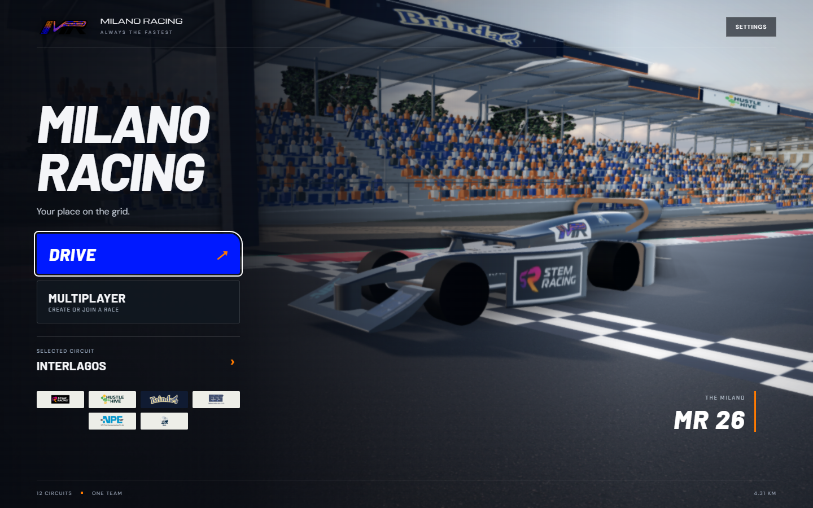
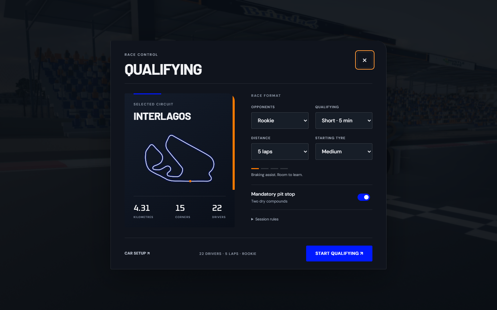
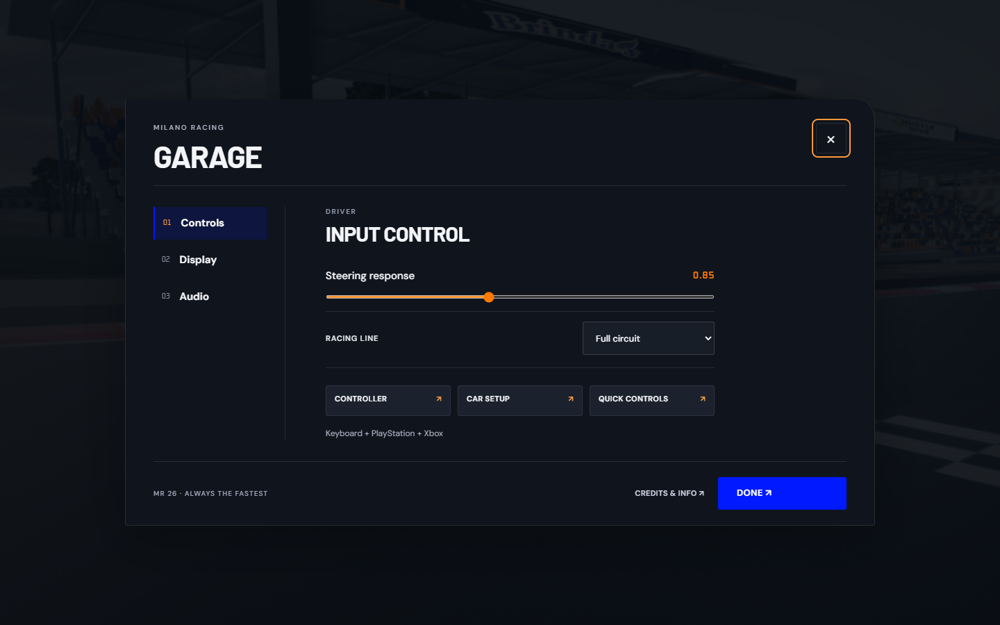

Current release — 25 October 2026
The fourteen-circuit performance and pit-facility update is covered by the current measurement report and change details. The native executable has separate packaged validation in its Source ZIP.
The sections below are dated historical results from earlier builds; their circuit counts and timings do not describe this release.
MILANO RACING / BUILD 2.0 / 22 OCTOBER 2026
Validation and limits
These checks describe the local release candidate. They establish specific behavior in the game model; they are not a guarantee of survey accuracy, real-car performance or a production server's capacity.
Verified locally
| Area | Evidence |
|---|
| Driving and optimized line | Two automated driving laps on each of the 12 circuits. No lap invalidations or barrier contacts in that test. Acceleration, braking and lateral-force constraints checked against the same vehicle model. Kerb use is allowed. This tests the model, not a real F1 car or every human driving input. |
| Qualifying and races | Full 18/15/13-minute qualifying progression, 22/16/10-car elimination and grid ordering; invalid and flag-time laps; tyre-compound and penalty checks. Twelve simulated five-lap races exercised 21 AI opponents, pit service, speed limits and classification. The test player was retired to let AI events finish deterministically. |
| Browser event flow | Edge menu → qualifying → pit release → lap/result state → grid → driving. Checked 21 rendered opponents, a completed Medium-to-Hard stop, 80 km/h limiting and correct pit-exit lap progress. Some session states were advanced directly for repeatable testing; this is not a human-completed Grand Prix. |
| Geometry and rendering | All 12 venues loaded without reported JavaScript, WebGL or asset errors. 1,859 vertical terrain coverage samples across the 11 real venues found no uncovered samples. Four camera modes per venue were checked for finite position; Austria, Yas Marina and Monaco received 12 additional footprint-clearance checks after the final correction. This samples coverage and viewpoints; it does not inspect every possible pixel or location. |
| Windows and offline HTML | Packaged Windows app launches, loads all 12 circuits and MR 26, and accelerates in practice. Renderer has no Node integration. Standalone HTML boots with HTTP/HTTPS requests blocked, loads fonts and assets, and drives. 1440×900 and 960×640 menus checked. |
| Website and multiplayer | The existing local React website built and embedded the game in the earlier integration check. The updated game passed a fresh two-browser-client join, ready, start, drive and reconnect regression. A separate 16-client test sent 3,632 updates over 20 seconds; local Windows p95 response was 43.35 ms. Identity, origin, room limits, host permissions and private access checks passed. |
| Ubuntu | Python 3.12.3/aiohttp 3.14.5 on local Ubuntu 24.04 WSL: 16 clients, 47,568 requests in five minutes, p95 3.91 ms; server RSS 39.92–40.14 MiB and 4.18% of one CPU core in this workload. This is not a 24-hour soak, an internet latency claim or a benchmark of your unknown server. |
Handling, traffic and environment update
Keyboard steering now ramps progressively and recentres after release. Unit checks cover four speeds, standard gamepad deadzones/triggers and buffered multiplayer interpolation. Player rendering interpolates the fixed simulation steps. Physical Bluetooth pairing and subjective controller feel still require hardware testing.
Twenty-one AI opponents were simulated for three minutes on each circuit, with no detected car overlap or road-bound violation in those runs. Passing checks look ahead through narrowing corners; following speed uses braking distance, and lane changes accelerate smoothly. The full qualifying/race regression completed 2,860,852 checks. These deterministic checks do not guarantee that every possible racing incident is covered.
Whole-circuit surroundings now combine mapped neighbourhoods, roads, forests, shorelines, piers, bridge decks/supports and authored venue structures. Concave roofs preserve courtyards. Shared static geometry and spatial batches reduce repeated submissions; dynamic racing-line arrows and foliage keep dynamic bounds. Venue Environment Research lists every circuit, primary references, current models and remaining fidelity work.
Measured render performance
One repeatable paused driving viewpoint per venue, 1440×900 viewport with Ultra supersampling, Edge and an RTX 3050 6 GB Laptop GPU. These are eight-second frame-interval samples, not full-grid race benchmarks or minimum frame rates. Frame times vary with viewpoint, traffic, device load and graphics settings.
| Venue | Median frame | 95th percentile | Draw calls, all passes |
|---|
| BAHRAIN | 13.6 ms | 14.0 ms | 1,591 |
| SINGAPORE | 27.7 ms | 27.9 ms | 591 |
| MONZA | 41.7 ms | 48.5 ms | 2,008 |
| MONACO | 13.9 ms | 34.8 ms | 1,245 |
| AUSTRIA | 20.9 ms | 27.9 ms | 956 |
| SILVERSTONE | 13.9 ms | 20.9 ms | 606 |
| ABU DHABI | 13.8 ms | 14.0 ms | 1,454 |
| MILANO AUTODROMO | 13.9 ms | 20.8 ms | 243 |
| SPA-FRANCORCHAMPS | 14.0 ms | 20.9 ms | 1,713 |
| SUZUKA | 20.6 ms | 21.0 ms | 592 |
| INTERLAGOS | 27.7 ms | 27.9 ms | 417 |
| ZANDVOORT | 20.8 ms | 27.8 ms | 369 |
Interface and venue refresh
The interface uses Barlow headings, DM Sans controls and the original Michroma wordmark. Decorative slash separators were removed. Settings use Controls, Display and Audio tabs; pre-race settings pair a circuit diagram with native controls. The font binaries are embedded for offline use, with their OFL licences. Barlow source.
Desktop and phone browser checks passed at 1440×900 and 390×844. Reduced-motion mode disables panel animation. Opaque settings rendered the backdrop at 4 frames per second during the measured two-second sample; keyboard, controller and network polling continue. This throttle is not used while driving.
Monza’s historic banking previously crossed the modern pit straight. The new mesh is clipped against the entire variable-width GP corridor; 3,600 sampled upward road rays found no banking intersections. Monaco now has ten mapped limestone cliff meshes, a continuous tunnel roof, retaining wall, open sea-side colonnade and lighting. Suzuka now includes Rocky Coaster, Adventure Drive, twin GP Racers, mapped driving attractions, park pavilions and a wheel based on the venue’s published approximate 50 m height. These are referenced reconstructions; ride profiles and cliff details remain estimated.
The updated standalone build started practice with all network requests blocked. Qualifying, grid formation, driving with 21 opponents and a completed pit stop passed the browser regression. Two independent multiplayer clients joined, drove and reconnected successfully. Earlier model tests remain applicable to unchanged physics; this update does not claim additional real-controller hardware testing.
Full-grid render sample
Paused 22-car grids, 1440×900 Ultra, eight seconds after warm-up, on the same RTX 3050 laptop. These measure rendering at the start grid; they do not establish minimum performance throughout a moving race.
| Venue | Median frame | 95th percentile |
|---|
| BAHRAIN | 13.9 ms | 20.9 ms |
| SINGAPORE | 13.9 ms | 21.1 ms |
| MONZA | 34.7 ms | 48.6 ms |
| MONACO | 13.9 ms | 21.0 ms |
| AUSTRIA | 27.8 ms | 34.7 ms |
| SILVERSTONE | 20.8 ms | 27.8 ms |
| ABU DHABI | 13.8 ms | 20.8 ms |
| MILANO AUTODROMO | 13.9 ms | 14.0 ms |
| SPA-FRANCORCHAMPS | 20.9 ms | 34.8 ms |
| SUZUKA | 20.8 ms | 27.8 ms |
| INTERLAGOS | 20.8 ms | 27.7 ms |
| ZANDVOORT | 41.7 ms | 48.7 ms |

Updated home screen
Race setup
Tabbed settingsFull-calendar environment release
All twelve venues passed six sampled driver views with no reported JavaScript errors or failed scene assets. The eleven real venues add terrain-fitted mapped ground areas, supporting raceways, fuller planting, boundary structures and footprint-based seating. Curved or U-shaped stands keep their open centres. Milano uses its own original ridge landscape and spectator campus. See the circuit-by-circuit environment guide for primary references and current inspection frames. These tests do not establish exact architectural fidelity or catch every possible visual defect.
Milano Autodromo: 6.540 km, 17 corners, 74 m elevation range, 14–18 m widths, 956 m longest straight and 648 m from the grid line to the first bend. Euler transitions, a closed periodic line and a force-constrained speed solver underpin the design. Two simulated driving laps completed without barrier contacts or invalidations. The line is a numerical local solution, not a proved global optimum or a real F1 lap prediction.
Partner allocations
Authentic supplied logos, equal wall-wrap lengths per venue, rotated premium gantries and six equal panels on each modelled pit facade. Stand slots cycle across all six partners. Runoff artwork is restricted to paved runoff. Allocation counts do not imply equal screen time from every camera or real sponsorship of the original venues.
| Partner | Wall length, calendar | Gantry faces | Pit panels | Stand panels |
|---|
| STEM Racing | 2205 m | 8 | 10 | 66 |
| Hustle Hive | 2205 m | 8 | 10 | 65 |
| Brinda's | 2205 m | 8 | 10 | 66 |
| Enermax Synergy | 2205 m | 8 | 10 | 65 |
| NPE Print Communications | 2205 m | 8 | 10 | 66 |
| Axis | 2205 m | 8 | 10 | 65 |
Forgiving track limits
The default event rule permits kerb/tyre overlap and brief recovery beyond the edge. The car-centre allowance is 2.4 m outside the road edge; shallow excursions get up to one second or 70 m. Deeper shortcuts use a shorter 0.25-second or 18 m threshold. A continuous excursion generates one event and rearms after 0.45 seconds safely inside the recovery corridor. Qualifying and timed practice delete sustained-cut laps; races warn three times before adding five seconds on the fourth event. Online races use the same policy. Surface grip fades gradually beyond the kerb, independently of penalties.
1,728 scenario checks cover both sides and the narrowest/widest sections of every circuit at three update rates. 19 traces produced identical browser and Python event indices. The server integration also tests kerb use and four separate excursions on every venue. These are deliberately accessible game rules, not the FIA track-limit procedure.
Moving-grid render sample
1440×900 Ultra on the RTX 3050 laptop. Twenty-one AI drivers accelerate from the grid while the player remains stationary; the last eight seconds are sampled after a two-second warm-up. This exercises moving AI and rendering together, but does not represent a complete race or minimum FPS throughout a lap. During the longer run, a hardware sample showed 89°C GPU temperature and 100% utilization; frame intervals were more variable than the short isolated foliage checks. Results below retain that variation rather than promising a locked frame rate.
| Venue | Median frame | 95th percentile |
|---|
| BAHRAIN | 14.0 ms | 21.0 ms |
| SINGAPORE | 14.0 ms | 21.2 ms |
| MONZA | 27.8 ms | 41.7 ms |
| MONACO | 27.7 ms | 34.8 ms |
| AUSTRIA | 27.7 ms | 34.7 ms |
| SILVERSTONE | 20.8 ms | 27.9 ms |
| ABU DHABI | 20.7 ms | 20.9 ms |
| MILANO AUTODROMO | 13.9 ms | 14.0 ms |
| SPA-FRANCORCHAMPS | 27.8 ms | 34.8 ms |
| SUZUKA | 27.7 ms | 34.8 ms |
| INTERLAGOS | 20.8 ms | 27.8 ms |
| ZANDVOORT | 41.6 ms | 48.7 ms |
The home showroom is capped at 30 fps and opaque settings at 4 fps while input and network polling continue. Driving is uncapped. Distant overlapping foliage uses stable world-cell canopy selection; nearby full geometry remains. Distant canopy impostors no longer sample the near-car shadow map. This removes redundant distant shading while retaining the wooded setting.
Geometry and sporting scope
The nine TUM venue boundary datasets are satellite-derived rather than certified surveys. Current Monaco and Singapore widths are promoter-map estimates. Changed or mismatched sections use labelled fallback widths. Road, kerbs, barriers, physics and guide share the same metre scale and left/right bounds. The Circuit Research guide records each source and min/max range.
Regional terrain uses a DEM with a coarse source grid, blended into the road profile. Building footprints and mapped features are geographic; heights, windows, roof detail and some landmarks are reconstructed. Background satellite imagery is from 2016/2017. These are recognisable game environments, not current laser scans.
Milano Autodromo is an original 6.540 km, 17-corner design informed by FIA Appendix O. It is not a homologated circuit. The MR 26 uses a custom game physics model and V10 sound; its pace and forces are not a prediction for the physical STEM car.
The race mode is a dry event model, with no Safety Car/VSC, red flags, weather, finite tyre allocation, fuel management, parc fermé, 107% rule or steward adjudication. Pit driving and service are assisted. Online rooms use ghost opponents and server timing; the solo qualifying/AI/tyre weekend is separate from the online mode. Client-authoritative vehicle physics is not a competitive anti-cheat system.
Deployment
No live game deployment has been performed. Uploading the source to the requested public GitHub repository does not change the game server or domain. The server defaults to private access and refuses access without configured credentials. Tests checked login, protected assets/downloads/API, session cookies and origin rejection. The real domain, Cloudflare tunnel, SSH host, Bluetooth controllers and long-duration production stability still require checks on your actual setup.
Pit routes, terrain and sponsor artwork — 23 October
All twelve pit routes now use tangent-continuous interpolation, height sampled at their actual ground positions and connected road cross-sections. Interlagos received a longer vertical transition; its maximum modeled pit grade fell from about 33% to 11.3%. This is a game reconstruction, not a surveyed gradient claim. Yas Marina includes a separated underground exit section based on the mapped route; tunnel clearance and vertical ramps are estimated.
The final automated pit check sampled 3,423 positions across all twelve circuits, with no missing pit floor or overlapping ground surfaces detected in that sample. Sponsor texture proportions passed on every circuit. The qualifying/race core regression passed 2,887,604 checks, including AI pit service, classification and pit speed limiting. The packaged compatibility desktop app launched, loaded MR 26 and Interlagos and accelerated without renderer Node integration.
Ground clipping now preserves UVs, normals and colours and handles vertices exactly on a clipping edge. Degenerate terrain triangles are rejected. Runoff defaults to grass where appropriate, with mapped gravel and paved areas. Near-track mapped sand at Monza, Silverstone and Suzuka is interpreted as gravel where circuit references support that use; this remains a classification inference. Gravel uses the CC0 Poly Haven gravel_floor material with colour, normal and roughness detail.
All six partners keep equal rotation through the sponsor allocation. Logos are fitted to physical board proportions and repeated across long banners instead of stretched. Higher-quality matching artwork was selected for STEM Racing, NPE and Axis. Clean supplied artwork was retained for Hustle Hive, Brinda’s and Enermax where an online alternative was worse or could not be verified.
Sources: STEM Racing Singapore, Hustle Hive, Brinda’s, NPE, matching Axis Container Lines artwork. Enermax Synergy SEA’s replacement artwork remains unverified, so its supplied mark is preserved. Selection evidence and hashes are in assets/sponsors/manifest.json.
Runoff references include Spa’s official 2022 works and the Red Bull Ring’s gravel changes. Team sponsor mats are an original Milano event treatment; they do not reproduce the real circuit’s commercial contracts. These fixes do not establish that every location or visual angle is defect-free.
Reports
The source package contains JSON evidence in upgrade/qa and repeatable tests in upgrade/tests. See Race Weekend Guide, Circuit Research and Ubuntu and Cloudflare Setup.